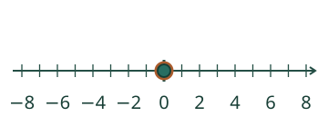
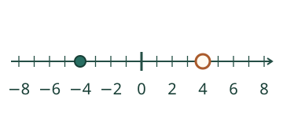
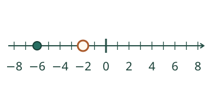
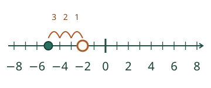
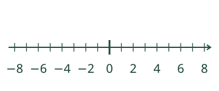

<link rel="stylesheet" href="lesson.css">
<section class="fn12" data-fn12-neg>


<section data-teaching-step="1" data-lesson-role="teaching-step">
<div class="intro"><p><strong>Aava etsii paikan −3.</strong> Tutki, missä miinusluvut ovat.</p></div>
</section>


<section data-teaching-step="2" data-lesson-role="teaching-step">
<fieldset data-lesson-role="worked-example"><legend>Siirrä merkkiä lukusuoralla</legend><div data-model-board tabindex="0" role="group" aria-label="Tutki lukusuoraa. Vasen ja oikea nuoli siirtävät yhden välin. Home: nolla."></div><p data-model-state>Kohta 0. Ei askeltakaan nollasta.</p><div class="actions"><button type="button" class="primary" data-action="left" aria-label="Yksi väli vasemmalle">← 1</button><button type="button" class="primary" data-action="right" aria-label="Yksi väli oikealle">1 →</button><button type="button" data-action="model-zero">Nollaan</button></div><p>Voit myös napauttaa kohtaa. Numeroiden välissä olevat pienet viivat ovat yhden välin päässä toisistaan.</p></fieldset>
</section>


<nav class="anchors" aria-label="Oppitunnin kohdat" data-lesson-role="metadata"><a href="#neg12-examples">Näin paikka löytyy</a><a href="#neg12-practice">Kokeile itse</a><a href="#neg12-exit">Lopuksi</a></nav>


<section data-teaching-step="3" data-lesson-role="teaching-step">
<details id="neg12-examples" data-lesson-role="teaching-step"><summary>Näin paikka löytyy</summary><h2>Etumerkki kertoo puolen</h2><figcaption><strong>−4</strong> löytyy neljä väliä nollasta vasemmalle. <strong>4</strong> on yhtä kaukana oikealla. Pelkkä numero 4 ei kerro samaa paikkaa kuin −4.</figcaption><p>Nollasta lähdetään: −1, −2, −3, −4. Laske neljä <strong>väliä</strong>. Nolla on lähtöviiva, ei ensimmäinen väli.</p><figcaption><strong>−6 on pienempi kuin −2</strong>, koska se on vasemmalla. Suurempi numero miinusmerkin jälkeen kertoo tässä pidemmästä matkasta nollaan.</figcaption><p data-lesson-role="question"><strong>Ennusta:</strong> onko −1 lähempänä nollaa kuin −5? Näytä kummankin paikka.</p><h3>Korkeus pinnan alla</h3><figcaption>Pinta on <strong>0 m</strong>. Korkeus −2 m pienenee kolmella metrillä: −3, −4, <strong>−5 m</strong>. Sukeltaja liikkuu alaspäin; vaakasuoralla lukusuoralla pienempi korkeus on vasemmalla. Yksi kuvaväli vastaa tässä yhtä metriä.</figcaption></details>
</section>


<section data-teaching-step="4" data-lesson-role="teaching-step">
<section id="neg12-practice"><h2>Merkitse tai lue</h2><fieldset><legend>Oma vastaus</legend><label>Tehtävä<select data-case><option value="place">Merkitse −5</option><option value="near">Nollan viereen</option><option value="zero">Nolla</option><option value="positive">Myös pluspuoli</option><option value="read">Lue piste</option><option value="depth">Pinnan alapuolella</option></select></label><p data-question data-lesson-role="question">Merkitse lukusuoralle −5.</p><div data-answer-board tabindex="0" role="group" aria-label="Merkitse vastaus napauttamalla tai nuolilla. Home: nolla."></div><label>Kohta lukuna<input type="text" inputmode="text" maxlength="128" data-answer autocomplete="off"></label><p>Voit napauttaa tai kirjoittaa luvun. Nuolinäppäimet siirtävät yhden välin; Home valitsee nollan.</p><div class="actions"><button type="button" class="primary" data-action="check">Tarkista</button><button type="button" data-action="clear">Tyhjennä</button></div><output data-feedback data-result="neutral" aria-live="polite">Tarkista, kun olet valmis.</output><details data-lesson-role="hint"><summary>Tarvitsen apua</summary><p data-hint>Etsi nolla. Laske 5 väliä vasemmalle.</p><button type="button" data-action="guide" aria-pressed="false">Näytä välit</button><p>Apukaaret näyttävät oman merkin välit. Lue piste -tehtävässä ne auttavat lukemaan annettua pistettä.</p></details></fieldset></section>
</section>


<section data-teaching-step="5" data-lesson-role="teaching-step">
<details data-lesson-role="teaching-step"><summary>Lisää tutkittavaa</summary><p>Sijoita tutkimusviivalle −7, −3, 0 ja 4. Missä järjestyksessä ne tulevat vasemmalta oikealle? Nolla ei ole positiivinen eikä negatiivinen.</p></details>
</section>


<section data-teaching-step="6" data-lesson-role="teaching-step">
<p id="neg12-exit" data-lesson-role="question"><strong>Lopuksi:</strong> miksi −4 ja 4 ovat eri kohdissa, vaikka molemmista on neljä väliä nollaan?</p>
</section>


<details data-lesson-role="teacher-note"><summary>Opettajalle ja ilman ruutua</summary><p>Vuosiluokat 3–6. Vaadittu M-NEG-01 säilyy. Tavoite on negatiivisen kokonaisluvun paikka, ei yleisen kokonaislukulaskennan tai fyysisen sukeltamisen taito. Lukusuoran alue on −8…8. Vastauskenttä tukee kokonaislukuarvoisia tavallisia desimaalimerkintöjä, etumerkkiä ja ylimääräisiä etu-/loppunollia; ei lausekkeita tai murtolukuja. Raakatekstin raja on 128 merkkiä. Askelnappi vaihtaa yhden lukuvälin ilman ajan mittaamista.</p><p>Tee paperille tai teipillä tasavälinen suora ja merkitse nolla. Anna oppilaan sijoittaa lukukortti ja näyttää välit, verrata vastakkaisia etumerkkejä tai kirjoittaa suoraan. Ääneen nimeämistä tai määrättyä napautustapaa ei vaadita. Numeerinen vastaus tai kuvan apukaarten käyttö ei todista itsenäistä strategiaa, säilyvää hallintaa tai oppimistehoa. Tämä harjoitus ei tallenna oppilashistoriaa eikä myönnä hallintamerkintää.</p></details>
<noscript data-lesson-role="metadata"><p>Ilman JavaScriptiä esimerkit ja kuvat säilyvät. Merkitse vastaukset paperille. Ruudun merkin siirtäminen ja tarkistuspalaute tarvitsevat JavaScriptin.</p></noscript>
</section>
